Sistemas Operativos · Semestre 3 – 2026
Infraestructura tecnológica integrada con virtualización Linux, contenedores Docker y orquestación Kubernetes.
Integrantes
Universidad del Valle — Tecnologia en Desarrollo de software
Johan Stiven
Romero Rodríguez
Farid Santiago
Velasco Otero
Jhoban Sebastián
Zapata Baicue
Andres Felipe
Velasco Portilla
Deiby Jhanpier
Hewitt Leiva
Desarrollo
Cuatro componentes técnicos construidos de forma secuencial, cada uno dependiente del anterior.
Dos máquinas virtuales Linux configuradas y comunicadas por red
Evidencias
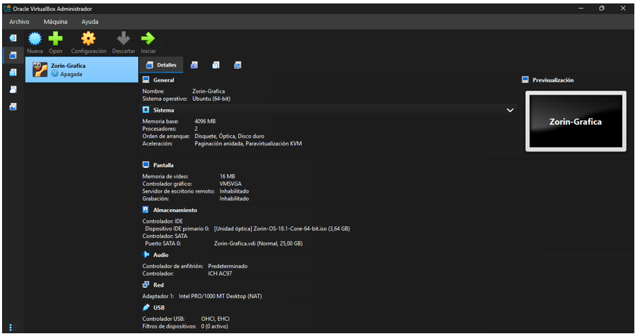
🖼️1.pngInstalación Zorin OS
'"/>Configuracion de la VirtualBox
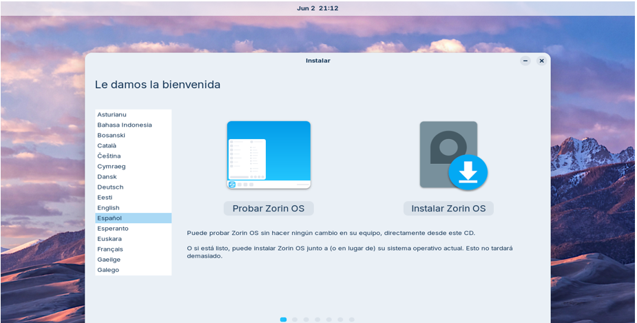
🖼️2.pngParticionamiento manual
'"/>Instalacion Zorin OS
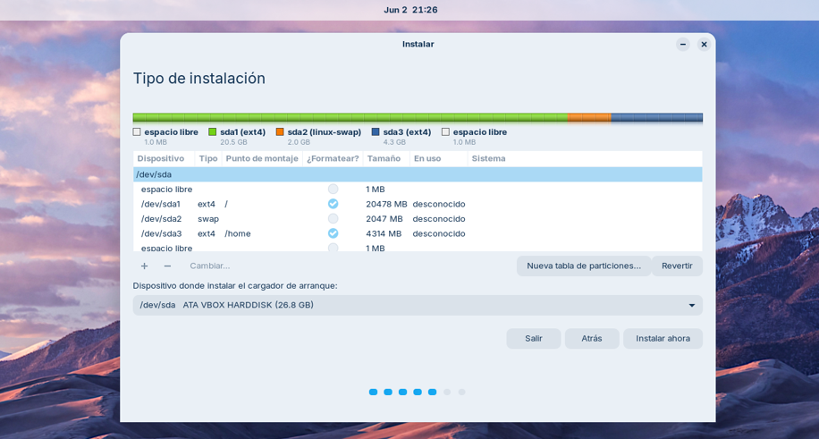
🖼️3.pngUbuntu 24.04 Server
'"/>Particionamiendo Manual
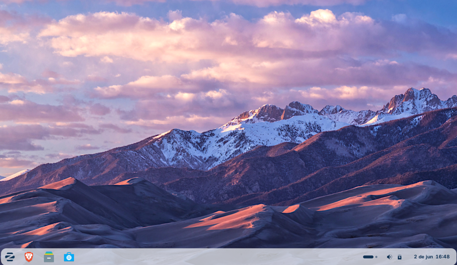
🖼️4.pngConfiguración de red
'"/>Zorin OS instalado
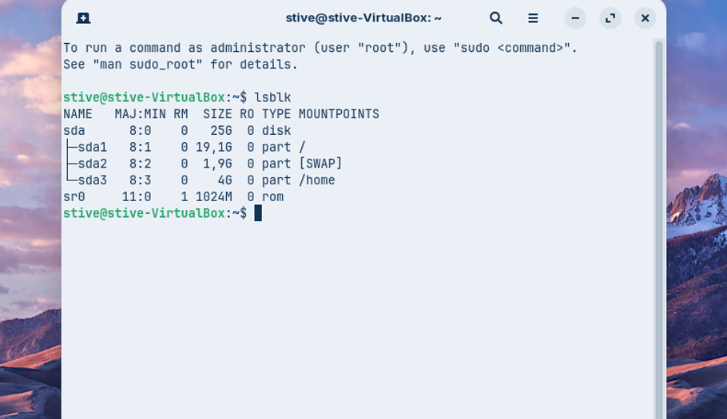
🖼️5.pngPing exitoso entre VMs
'"/>Verificacion de las particiones
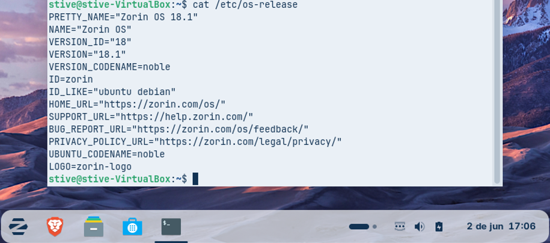
🖼️6.pngSSH funcional
'"/>Verificacion del sistema
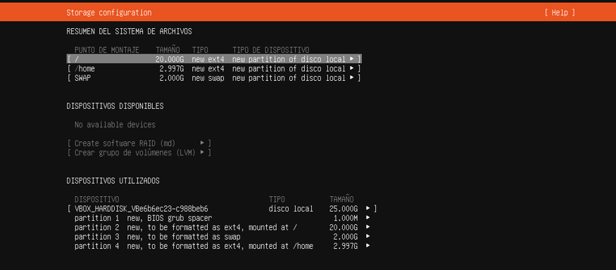
🖼️6.pngSSH funcional
'"/>Configuracion del almacenamiento
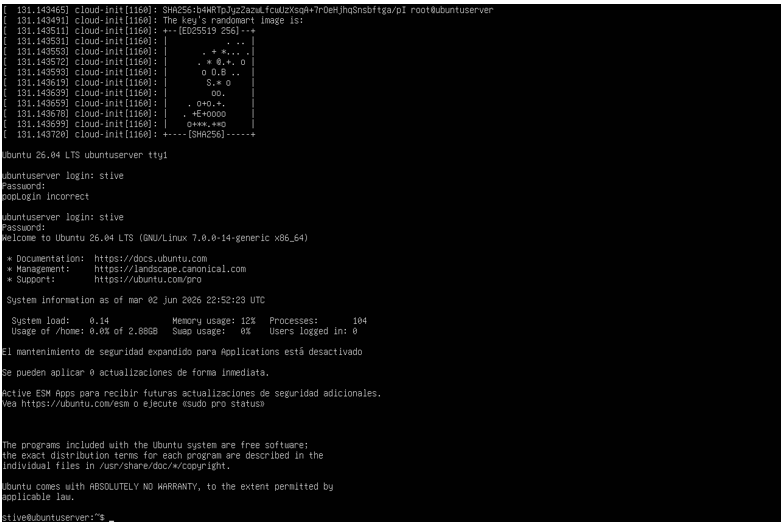
🖼️6.pngSSH funcional
'"/>Inicio de sesion servidor
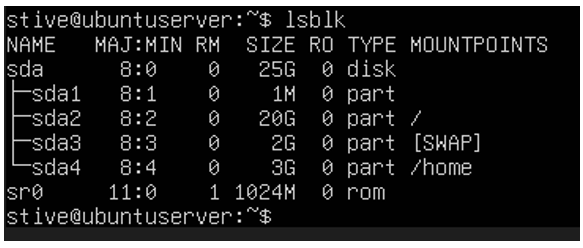
🖼️6.pngSSH funcional
'"/>Particiones del Ubuntu Server
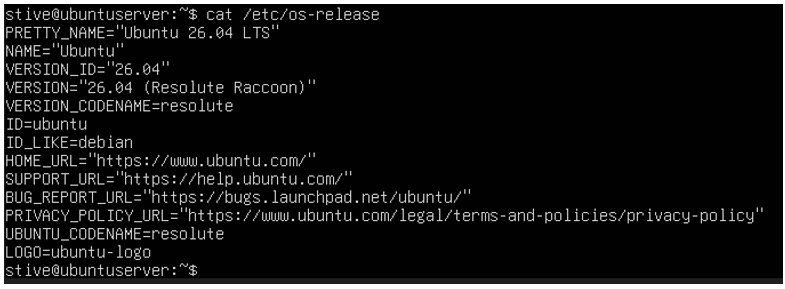
🖼️6.pngSSH funcional
'"/>Sistema operativo servidor
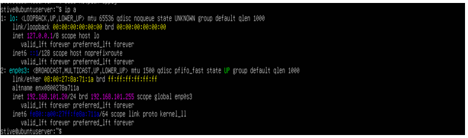
🖼️6.pngSSH funcional
'"/>Interfaces de red
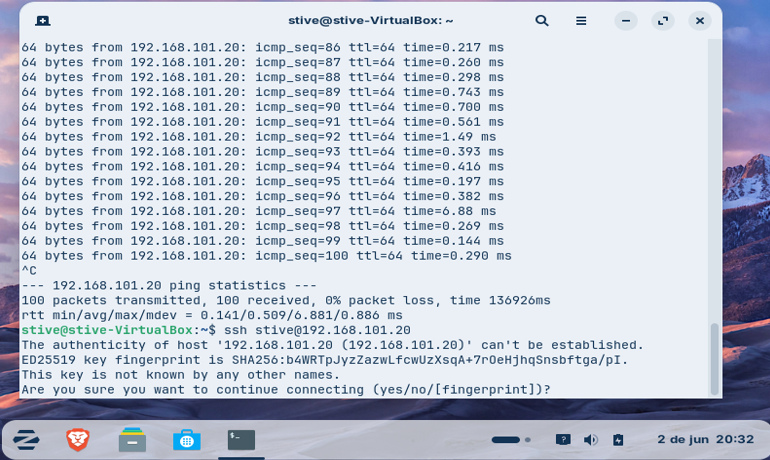
🖼️6.pngSSH funcional
'"/>Ping entre VMs
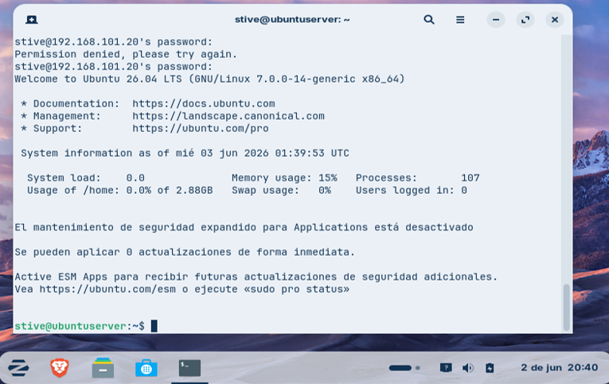
🖼️6.pngSSH funcional
'"/>Conexion SSH establecida
Frontend Nginx + Backend Python orquestados con Docker Compose
Evidencias
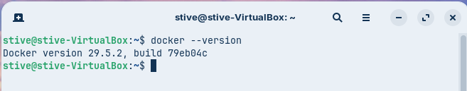
🐳dockerversion.pngdocker --version
'"/>docker --version
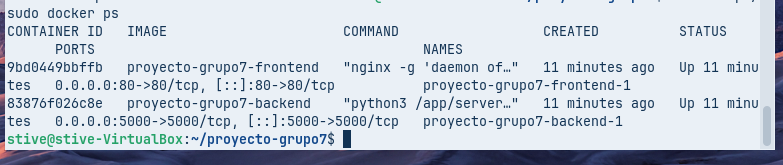
🐳dockerps.pngdocker ps
'"/>Contenedores corriendo
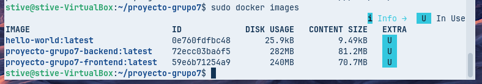
🐳dockerimages.pngdocker images
'"/>Imágenes creadas
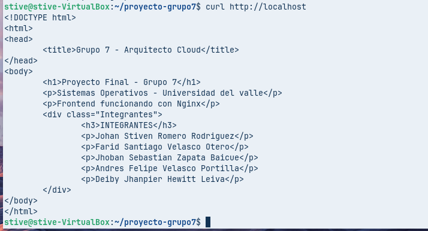
🐳curllocalhost_frontfunciona.pngcurl localhost
'"/>curl http://localhost
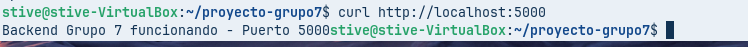
🐳curlback_funciona.pngcurl localhost:5000
'"/>curl http://localhost:5000
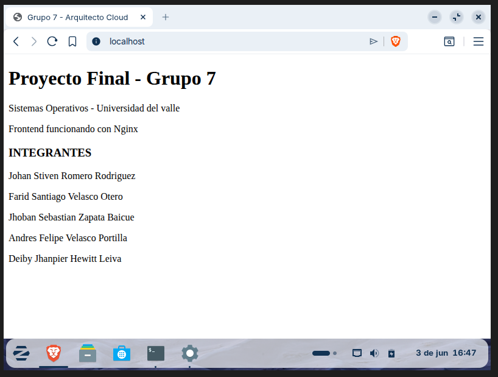
🐳frontend_navegador.pngFrontend en navegador
'"/>Frontend en navegador
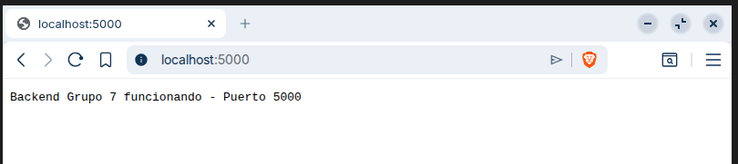
🐳backend_navegador.pngBackend en navegador
'"/>Backend en navegador
Minikube con Nginx desplegado, réplicas y escalado manual
Evidencias
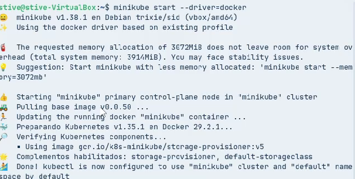
☸️captura 1.pngminikube start
'"/>minikube start
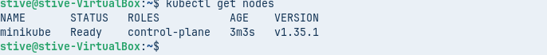
☸️Captura 2.pngkubectl get nodes
'"/>kubectl get nodes
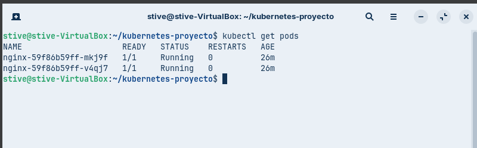
☸️Captura 3.pngkubectl get pods
'"/>Pods corriendo (2 réplicas)
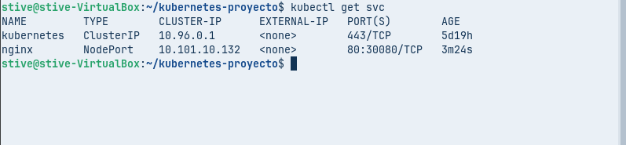
☸️Captura 4.pngEscalado a 3 réplicas
'"/>servicios activos NodePort
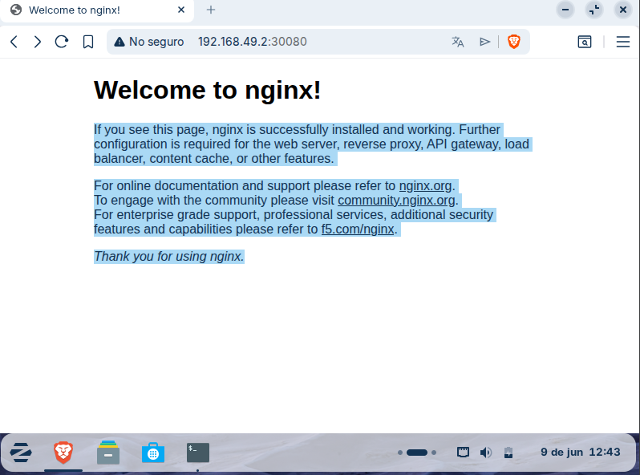
☸️Captura 5.pngNginx en navegador
'"/>Nginx accesible en navegador
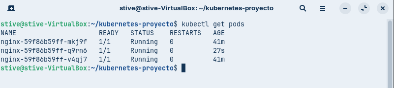
☸️Captura 5.pngNginx en navegador
'"/>Escalado a 3 replicas
Documentación técnica publicada en GitHub Pages
Reflexión final
Aprendizajes y dificultades encontradas durante el desarrollo del proyecto.
Aprendimos a instalar y configurar sistemas operativos Linux en entornos virtualizados, incluyendo el particionamiento manual de discos y la configuración de red entre máquinas virtuales.
Comprendimos la diferencia entre imágenes y contenedores, cómo escribir Dockerfiles eficientes y cómo orquestar múltiples servicios con Docker Compose para que trabajen juntos.
Logramos desplegar servicios con alta disponibilidad usando réplicas, comprendiendo cómo Kubernetes garantiza que los servicios permanezcan activos ante fallos.
Durante el desarrollo del Componente 3 enfrentamos, problemas de indentación en los archivos YAML y el cluster de Minikube tardando en iniciar. "Al principio cuando intentamos hacer ping desde Zorin OS hacia Ubuntu Server, no había respuesta. El ping simplemente se quedaba esperando y no llegaba ningún paquete. Después de revisar, nos dimos cuenta que ambas máquinas estaban configuradas en modo NAT, y el problema con NAT es que cada VM queda en su propia red aislada, entonces no pueden verse entre ellas directamente. La solución fue cambiar el adaptador de red de ambas VMs a Red Interna en VirtualBox, asignándoles la misma red interna para que pudieran comunicarse. Después de ese cambio el ping funcionó perfectamente